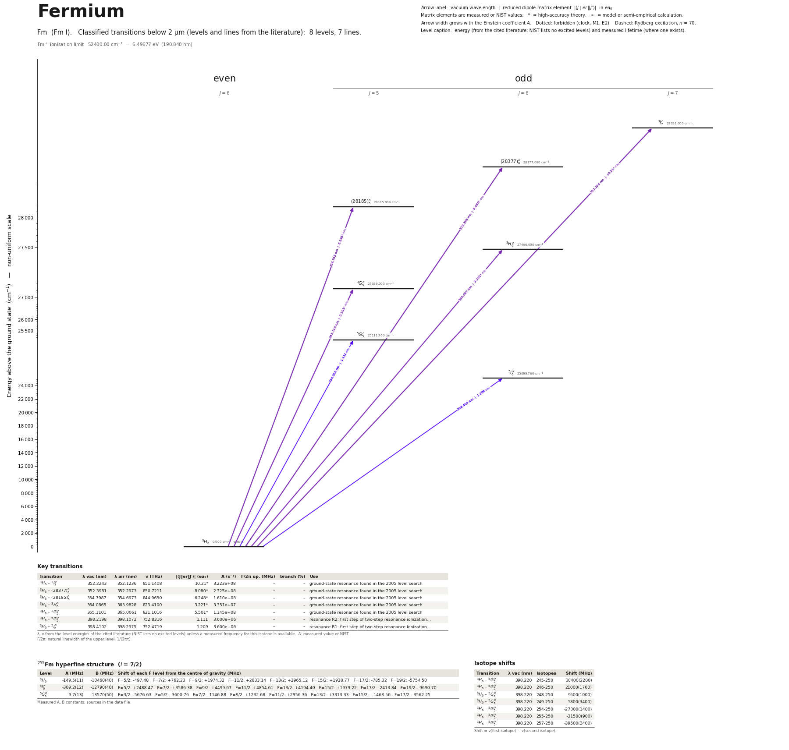

Fermium energy level diagram
Energy levels and transitions of neutral fermium (Fm I): 8 levels and 7 classified lines below 2 µm taken from the cited literature, each line with its vacuum wavelength and frequency and, for 7 of them, the reduced dipole matrix element. The NIST Atomic Spectra Database lists only the ground level and the ionisation limit of fermium, so the level energies on this page are those of the literature sources named below.
Hover a line or a level to isolate it, click to keep it selected. Scroll to zoom, drag to move.

Download: diagram (PDF) diagram (SVG) transitions (CSV) levels (CSV) source code

Key transitions of fermium
| Transition | λ vac (nm) | λ air (nm) | ν (THz) | |⟨J‖er‖J′⟩| (ea₀) | A (s⁻¹) | Γ/2π up. (MHz) | branch (%) | Use |
|---|---|---|---|---|---|---|---|---|
| 3H6 – 3I°7 | 352.2243 | 352.1236 | 851.1408 | 10.21* | 3.223e+08 | – | – | ground-state resonance found in the 2005 level search |
| 3H6 – (28377)°6 | 352.3981 | 352.2973 | 850.7211 | 8.080* | 2.325e+08 | – | – | ground-state resonance found in the 2005 level search |
| 3H6 – (28185)°5 | 354.7987 | 354.6973 | 844.9650 | 6.248* | 1.610e+08 | – | – | ground-state resonance found in the 2005 level search |
| 3H6 – 3H°6 | 364.0865 | 363.9828 | 823.4100 | 3.221* | 3.351e+07 | – | – | ground-state resonance found in the 2005 level search |
| 3H6 – 3G°5 | 365.1101 | 365.0061 | 821.1016 | 5.501* | 1.145e+08 | – | – | ground-state resonance found in the 2005 level search |
| 3H6 – 5G°5 | 398.2198 | 398.1072 | 752.8316 | 1.111 | 3.600e+06 | – | – | resonance R2: first step of two-step resonance ionization… |
| 3H6 – 5I°6 | 398.4102 | 398.2975 | 752.4719 | 1.209 | 3.600e+06 | – | – | resonance R1: first step of two-step resonance ionization… |
λ, ν from the level energies of the cited literature (NIST lists no excited levels) unless a measured frequency for this isotope is available. A: measured value or NIST. Γ/2π: natural linewidth of the upper level, 1/(2πτ).
255Fm hyperfine structure (I = 7/2)
| Level | A (MHz) | B (MHz) | Shift of each F level from the centre of gravity (MHz) |
|---|---|---|---|
| 3H6 | -149.5(11) | -10460(40) | F=5/2: -497.48 F=7/2: +762.23 F=9/2: +1974.32 F=11/2: +2833.14 F=13/2: +2965.12 F=15/2: +1928.77 F=17/2: -785.32 F=19/2: -5754.50 |
| 5I°6 | -309.2(12) | -12790(40) | F=5/2: +2488.47 F=7/2: +3586.38 F=9/2: +4499.67 F=11/2: +4854.61 F=13/2: +4194.40 F=15/2: +1979.22 F=17/2: -2413.84 F=19/2: -9690.70 |
| 5G°5 | -9.7(13) | -13570(50) | F=3/2: -5676.63 F=5/2: -3600.76 F=7/2: -1146.88 F=9/2: +1232.68 F=11/2: +2956.36 F=13/2: +3313.33 F=15/2: +1463.56 F=17/2: -3562.25 |
Measured A, B constants; sources in the data file.
Isotope shifts
| Transition | λ vac (nm) | Isotopes | Shift (MHz) |
|---|---|---|---|
| 3H6 – 5G°5 | 398.220 | 245-250 | 30400(2200) |
| 3H6 – 5G°5 | 398.220 | 246-250 | 21000(1700) |
| 3H6 – 5G°5 | 398.220 | 248-250 | 9500(1000) |
| 3H6 – 5G°5 | 398.220 | 249-250 | 5800(3400) |
| 3H6 – 5G°5 | 398.220 | 254-250 | -27000(1400) |
| 3H6 – 5G°5 | 398.220 | 255-250 | -31500(900) |
| 3H6 – 5G°5 | 398.220 | 257-250 | -39500(2400) |
Shift = ν(first isotope) − ν(second isotope).
Listed Fm transitions below 2 µm
Reduced dipole matrix elements follow the convention A = ω³|d|²/(3πε₀ħc³(2J′+1)), with J′ the upper level. Tags show where a number comes from: measured, NIST compilation, high-accuracy theory, or a model calculation.
Fm energy levels
| Level | Energy (cm⁻¹) | J | Parity | Lifetime | gJ | Hyperfine A (MHz) | Hyperfine B (MHz) | Lifetime source | Hyperfine source |
|---|---|---|---|---|---|---|---|---|---|
| 3H6 | 0.000 | 6 | even | stable | 1.1619 theory | -149.5 | -10460 | – | Urquiza-Gonzalez, Stemmler, Albrecht, Bally, Bender, et al., 'High-Resolution Laser Spect… |
| 5I°6 | 25099.760 | 6 | odd | – | 1.1861 theory | -309.2 | -12790 | – | Urquiza-Gonzalez, Stemmler, Albrecht, Bally, Bender, et al., 'High-Resolution Laser Spect… |
| 5G°5 | 25111.760 | 5 | odd | – | 1.1204 theory | -9.7 | -13570 | – | Urquiza-Gonzalez, Stemmler, Albrecht, Bally, Bender, et al., 'High-Resolution Laser Spect… |
| 3G°5 | 27389.000 | 5 | odd | – | 1.212 theory | – | – | – | – |
| 3H°6 | 27466.000 | 6 | odd | – | 1.2485 theory | – | – | – | – |
| (28185)°5 | 28185.000 | 5 | odd | – | 1.2029 theory | – | – | – | – |
| (28377)°6 | 28377.000 | 6 | odd | – | 1.1744 theory | – | – | – | – |
| 3I°7 | 28391.000 | 7 | odd | – | 1.1455 theory | – | – | – | – |
Fm⁺ ionisation limit 52400.00 cm⁻¹ = 6.49677 eV (190.840 nm)
Sources
- Allehabi, Li, Dzuba, Flambaum, 'Theoretical study of electronic structure of erbium and f…
- Backe, Dretzke, Fritzsche, Haire, Kunz, Lauth, Sewtz, Trautmann, Hyperfine Interact. 162,…
- Sewtz, 'Optische Spektroskopie an Fermium (Z=100)', doctoral thesis, Johannes Gutenberg-U…
- Urquiza-Gonzalez, Stemmler, Albrecht, Bally, Bender, et al., 'High-Resolution Laser Spect…
- Urquiza-Gonzalez, Stemmler, Albrecht, Bally, Bender, et al., 'High-Resolution Laser Spect…
NIST lists only the ground level and a bracketed (extrapolated) limit. Seven odd levels are known, all found by resonance ionization of 255Fm from the ground state: two near 398 nm (R1, R2; energies, J and hyperfine constants from the 2026 high-resolution work, entered as measured) and five between 365 and 352 nm (2005, second-hand, +-1.5 cm^-1, J from theory). A_s of the two 398 nm lines are partial rates from saturation measurements (model-dependent); A_s of the other five lines and all g_J are calculated values marked theory; A_s_lower_bound holds the two measured lower limits. No lifetime is stored. Isotope shifts are nu(first) - nu(second), reference 250Fm, on the R2 line. Hyperfine constants were printed in GHz and converted to MHz. Term labels of the excited levels are leading components of calculated wavefunctions (proposals). The broad structure at 25 740(5) cm^-1 seen in 2003 (about 30 cm^-1 wide, possibly a two-photon resonance) is not entered as a level. CLAUDE.md of the project records an earlier owner decision not to add Fm; this file was written at the request of the 2026-10-02 workflow task and changes nothing else.
Atoms with measured data
- Lithium-632 levels, 85 lines
- Lithium-732 levels, 85 lines
- Beryllium-917 levels, 26 lines
- Sodium-2336 levels, 106 lines
- Magnesium-2418 levels, 61 lines
- Magnesium-2518 levels, 61 lines
- Potassium-3934 levels, 84 lines
- Potassium-4034 levels, 84 lines
- Potassium-4134 levels, 84 lines
- Calcium-4035 levels, 61 lines
- Calcium-4335 levels, 61 lines
- Rubidium-8536 levels, 94 lines
- Rubidium-8736 levels, 94 lines
- Strontium-8740 levels, 70 lines
- Strontium-8840 levels, 70 lines
- Caesium-13331 levels, 79 lines
- Barium-13744 levels, 89 lines
- Barium-13844 levels, 89 lines
- Dysprosium-16339 levels, 55 lines
- Dysprosium-16439 levels, 55 lines
- Ytterbium-17118 levels, 26 lines
- Ytterbium-17418 levels, 26 lines